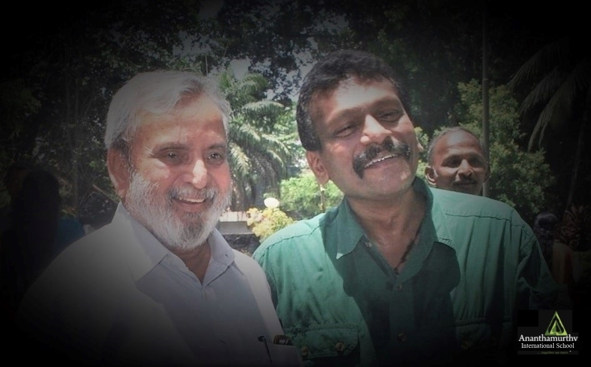

Home › Our School
Guided by shared values: joyful learning, care for community, pride in our heritage, and responsibility to the world around us.
Our Values
Everything at the school, from the classroom to Kalarippayattu practice, starts from these six commitments.
Strong foundations in literacy, numeracy, and inquiry-based learning across all stages.
A stress-free environment that nurtures lifelong curiosity and love of learning.
Respect for differences, cooperative values, and care for the community around us.
Deep exploration of Kerala's heritage so students know who they are and where they come from.
Confident, independent citizens who contribute meaningfully to society.
Ecological awareness woven into the curriculum and daily school life.

Our Story
Ananthamurthy International School puts character first: high academic standards and modern cooperative learning sit alongside the nurturing of interpersonal abilities, teamwork, and leadership. It is a different kind of school in how it teaches, but what drives it is what it values.
Located in Vattiyoorkavu, Thiruvananthapuram, the school follows the Cambridge International syllabus. English is the medium of instruction, while Malayalam and Hindi are given equal importance. Yoga, Kalarippayattu, Art & Craft, and Music are part of school life, alongside Kerala history and heritage.
The school is owned and managed by the Ananthamurthy Foundation Trust, a registered public charitable trust. The school also describes its effort to accommodate children from marginalized communities with CSR support.
Our Philosophy
Roots — Cultural Grounding
Students learn Malayalam and explore Kerala's history and cultural heritage through the integrated Keraleeyam curriculum, including visits to places of cultural and historical importance.
Wings — Global Readiness
Cambridge International learning is enriched by cooperative, student-centred teaching and the 21st-century skills built into classroom learning.

Leadership — Our Director
“The Executive Director describes a school that encourages children to construct understanding through exploration, experiments, surveys, field trips, projects, discussion, and learning games rather than memorisation.”
Suresh Kumar IAS (Rtd)Executive Director